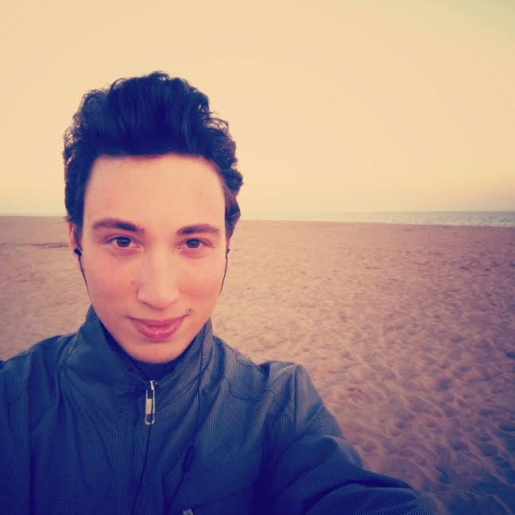

I am a Marie Skłodowska-Curie fellow and I am working on EU H2020 SCAVENGE at the Centre Tecnològic de Telecomunicacions de Catalunya (CTTC). I have a BSc degree in Information Engineering, a MSc in Telecommunication Engineering and I am currently pursuing a PhD at the department of Telematics Engineering of the Technical University of Catalonia (UPC).
My current research interests include energy harvesting in wireless communications, energy transfer systems and resource allocation in wireless communication systems.

Research
My research project investigates on possible integration architectures between the energy harvesting mobile network and the smart electricity grid. In particular, the main scope is to study the capability of 5G mobile networks of intelligently routing energy in a micro grid of interconnected conventional/renewable energy sources and loads to:
- satisfy the demand of communication networks while avoiding energy outages in zones with high user density and/or low ambient energy availability;
- provide ancillary services to the grid.
The exptected results are to build a theory-to-practice understanding of energy routing systems and of the associated performance trade-offs. In particular, I am studying the design of joint traffic/energy allocation policies for environmentally powered networks with energy transfer capabilities, taking into account complexity constraints, energy storage capability and partial system-state knowledge at the base stations.

 This project has received funding from the European Union Horizon 2020 research and innovation programme under the Marie Sklodowska-Curie grant agreement No. 675891 (SCAVENGE).
This project has received funding from the European Union Horizon 2020 research and innovation programme under the Marie Sklodowska-Curie grant agreement No. 675891 (SCAVENGE).Publications
2018
-
Optimal Direct Load Control of Renewable Powered Small Cells: Performance Evaluation and Bounds
Nicola Piovesan, Marco Miozzo, Paolo Dini
IEEE Wireless Communications and Networking Conference (WCNC), 15-18 April 2018, Barcelona (Spain)
2017
-
Optimal Placement of Functional Split Options for Energy Harvesting Virtual Small Cells
Dagnachew Temesgene, Nicola Piovesan, Marco Miozzo, Paolo Dini
[submitted]
-
Energy Sustainable Paradigms and Methods for Future Mobile Networks: a Survey
Nicola Piovesan, Angel F. Gambin, Marco Miozzo, Michele Rossi, Paolo Dini
[submitted]
-
Optimal Direct Load Control of Renewable Powered Small Cells: A Shortest Path Approach
Nicola Piovesan, Paolo Dini
Internet Technology Letters, Wiley, 2017.
Abstract PaperIn this letter, we propose an optimal direct load control of renewable powered small base stations (SBSs) in a two-tier mobile network based on dynamic programming (DP). We represent the DP optimization using Graph Theory and state the problem as a Shortest Path search. We use the Label Correcting Method to explore the graph and find the optimal ON/OFF policy for the SBSs. Simulation results demonstrate that the proposed algorithm is able to adapt to the varying conditions of the environment, namely renewable energy arrivals and traffic demands. The key benefit of our study is that it allows to elaborate on the behavior and performance bounds of the system.
@article {piovesan2017optimal, author = {Piovesan, Nicola and Dini, Paolo}, title = {Optimal direct load control of renewable powered small cells: A shortest path approach}, journal = {Internet Technology Letters}, publisher = {John Wiley & Sons, Ltd}, issn = {2476-1508}, }
2016
-
Cooperative Localization in WSNs: a Hybrid Convex/non-Convex Solution
Nicola Piovesan, Tomaso Erseghe
IEEE Transactions on Signal and Information Processing over Networks, 2016.
Abstract PaperWe propose an efficient solution to peer-to-peer localization in a wireless sensor network which works in two stages. At the first stage the optimization problem is relaxed into a convex problem, given in the form recently proposed by Soares, Xavier, and Gomes. The convex problem is efficiently solved in a distributed way by an ADMM approach, which provides a significant improvement in speed with respect to the original solution. In the second stage, a soft transition to the original, non-convex, non relaxed formulation is applied in such a way to force the solution towards a local minimum. The algorithm is built in such a way to be fully distributed, and it is tested in meaningful situations, showing its effectiveness in localization accuracy and speed of convergence, as well as its inner robustness.
@article{piovesan2016cooperative, author={Nicola Piovesan and Tomaso Erseghe}, journal={IEEE Transactions on Signal and Information Processing over Networks}, title={Cooperative Localization in WSNs: a Hybrid Convex/non-Convex Solution}, year={2016}, volume={PP}, number={99}, pages={1-1},}
-
Data Analytics for Smart Parking Applications
Nicola Piovesan, Leo Turi, Enrico Toigo, Borja Martinez, Michele Rossi
MDPI Sensors, 2016.
Abstract PaperWe consider real-life smart parking systems where parking lot occupancy data are collected from field sensor devices and sent to backend servers for further processing and usage for applications. Our objective is to make these data useful to end users, such as parking managers, and, ultimately, to citizens. To this end, we concoct and validate an automated classification algorithm having two objectives: (1) outlier detection: to detect sensors with anomalous behavioral patterns, i.e., outliers; and (2) clustering: to group the parking sensors exhibiting similar patterns into distinct clusters. We first analyze the statistics of real parking data, obtaining suitable simulation models for parking traces. We then consider a simple classification algorithm based on the empirical complementary distribution function of occupancy times and show its limitations. Hence, we design a more sophisticated algorithm exploiting unsupervised learning techniques (self-organizing maps). These are tuned following a supervised approach using our trace generator and are compared against other clustering schemes, namely expectation maximization, k-means clustering and DBSCAN, considering six months of data from a real sensor deployment. Our approach is found to be superior in terms of classification accuracy, while also being capable of identifying all of the outliers in the dataset.
@article{piovesan2016data, AUTHOR = {Piovesan, Nicola and Turi, Leo and Toigo, Enrico and Martinez, Borja and Rossi, Michele}, TITLE = {Data Analytics for Smart Parking Applications}, JOURNAL = {Sensors}, VOLUME = {16}, YEAR = {2016}, NUMBER = {10}, ARTICLE NUMBER = {1575}, URL = {http://www.mdpi.com/1424-8220/16/10/1575}, ISSN = {1424-8220}, DOI = {10.3390/s16101575} }
-
Distributed algorithms for localization in Wireless Sensor Networks
Nicola Piovesan
M.Sc. thesis, 2016.
Abstract ThesisWe introduce the concept of localization in Wireless Sensor Networks, starting from ranging measurements available at sensor nodes. We explore different solutions available in the literature and then we introduce the algorithms proposed by two recent publications. Finally, we propose a new hybrid ADMM algorithm that, considering both the original non-convex problem and a convexification of the problem, allows to obtain better performances.
2013
-
Studio di Support Vector Machine per la classificazione e la regressione statistica
Nicola Piovesan
B.Sc. thesis, 2013.
Abstract ThesisIl lavoro studia inizialmente l’utilizzo di Support Vector Machine per la classificazione. Vengono introdotte SVM lineari per dati separabili e non separabili e SVM non lineari con Kernel. In seguito, quanto visto in via teorica viene applicato a due casi di classificazione (Iris di Fisher e classificazione dei dati di una analisi SPECT). Per finire vengono introdotte le SVM per la regressione statistica.
Talks
-
SCAVENGE: a European Training Network for PhD students
Science week 2017
November 16th, 2017
CTTC, Barcelona, Spain
AbstractIn this talk we introduce our work in SCAVENGE, an European Training Network. The project is about sustainable design for mobile communication systems by engineering the integration and the control of renewable energy sources within communication network elements, such as base stations and mobile phones. We will describe the main objectives of the Network, detailing the training and research activities that we have been carrying out during our first year of work.
-
Optimal energy conservation policies for self-sustainable Small Cells
SCAVENGE workshop
June 2nd, 2017
Strathclyde University, Glasgow, UK
AbstractCurrent trends anticipate that 5G mobile networks will be composed of ultra-dense deployments of heterogeneous Base Stations (BSs), where BSs using different transmission powers coexist to provide the 1000x network capacity increase that is required by 2020. Accordingly, the traditional macro cell layer will be complemented or replaced with multiple overlapping tiers of smaller cells, which extend the system capacity, thanks to a higher spatial reuse and to a better spectral efficiency. We introduce a two-tier cellular network architecture, where self-sustainable small cells (SCs), solely relying on energy harvesting and storage, can offload the grid-connected macro base station. The available energy at the SC must be allocated in an optimal way, in order to jointly minimize the consumption of grid energy and maximize the system performance. The proposed offline optimal algorithm, based on the label correcting algorithm, finds the optimal energy allocation policy, after transforming the problem into a shortest-path problem.
-
Presentation of the SCAVENGE ESR-05
SCAVENGE initial training school
November 21st, 2016.
CTTC, Barcelona, Spain
-
Data analytics Worldsensing student contest 2014
DEI Awards
June 5th, 2015.
University of Padova, Padova, Italy